The Oral Health Journal
Understanding the connections between your smile and your health.

Why isn't prevention working in Indian Dentistry
Prevention in Healthcare Is Not a Behaviour Problem. It Is a Governance Problem

Why It’s Time to Rename “Artificial Intelligence” as “Collective Intelligence”
Why We Need To Change How We Talk About AI
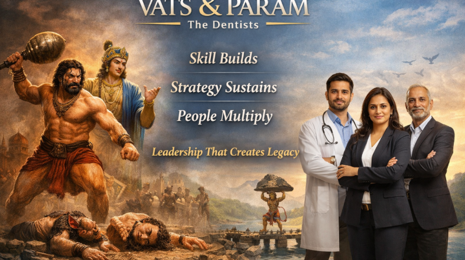
What Founders see vs What Leaders understand: Why Skill Creates Potential but Strategy Creates Destiny !
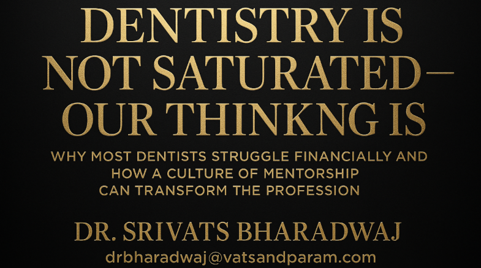
Dentistry Is Not Saturated - Our Thinking Is
Why Most Dentists Struggle Financially and How a Culture of Mentorship Can Transform the Profession
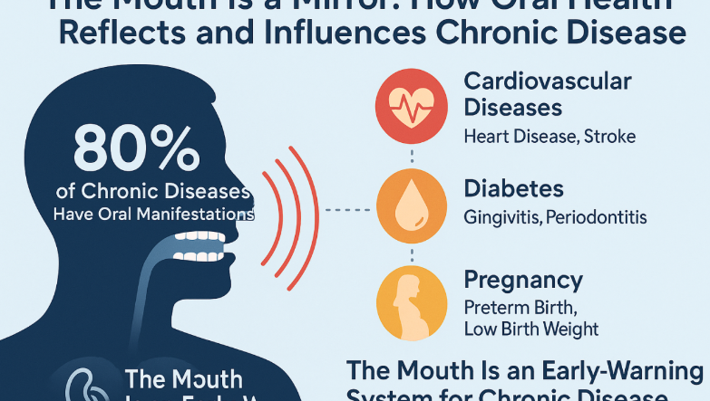
The Mouth as a Mirror: How Oral Health Reflects and Influences Chronic Disease
Why the Gateway to Your Body Is Key to Your Overall Well-Being
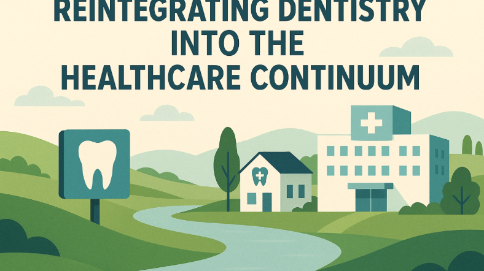
Breaking the Silence: Reintegrating Dentistry Into the Healthcare Continuum
How oral healthcare can be finally positioned as an integral part of systemic healthcare
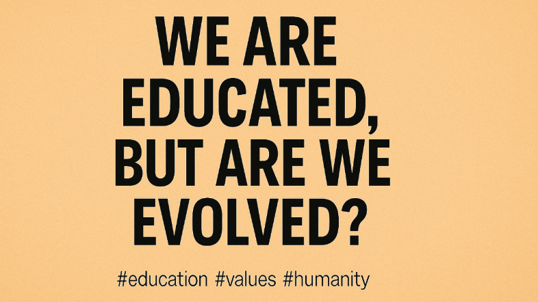
“We Are Educated, But Are We Evolved?”
A Case for Rebuilding Human Culture from the Ground Up
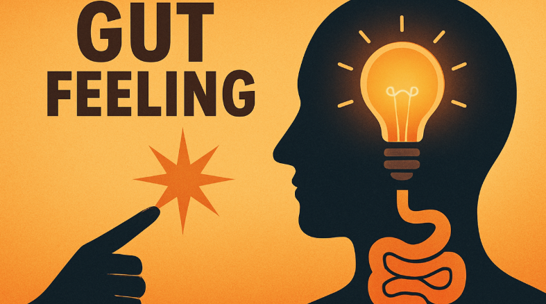
“Success Begins With the Gut: The Power of Intent and Inner Wisdom”
Why Your Thoughts Influence Your Digestion and Your Destiny
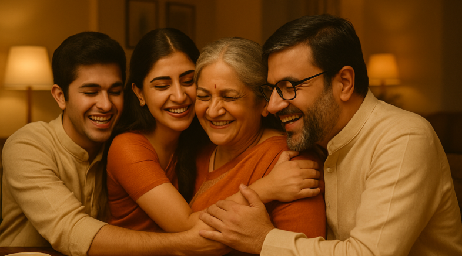
“The Forgotten Togetherness: Reclaiming What Truly Matters”
Reflections on Relationships, Resilience, and Rediscovering the Joy of Connection
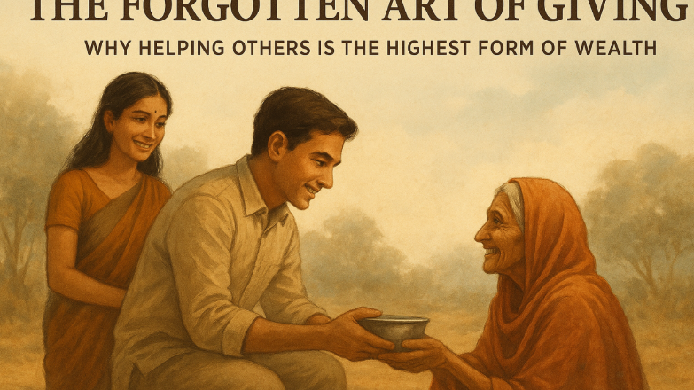
The Forgotten Art of Giving:
Give, Not to Change the World — But to Let It Change You
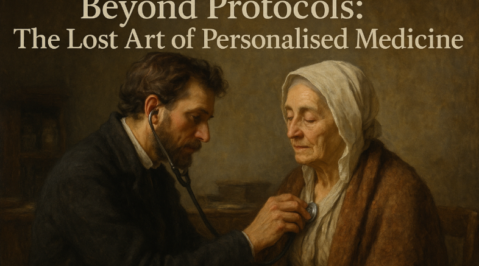
Beyond protocols: The lost Art of Personalized Medicini
One Size Doesn’t Heal All: When Medicine Becomes Mechanical
To Every Doctor Who Still Chooses to Care
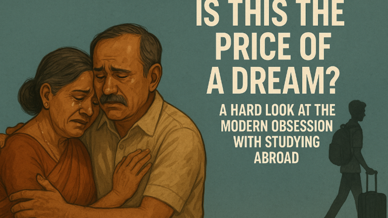
Is This the Price of a Dream? Rethinking the Pursuit of Education Abroad
A Hard look at Modern Obsession with studying Abroad
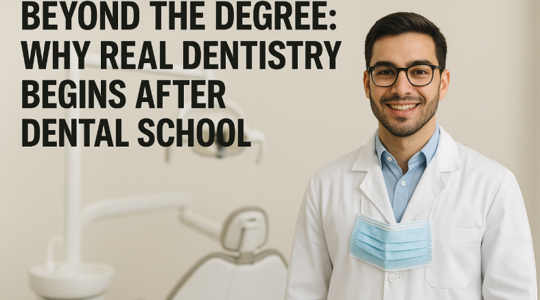
Beyond the Degree:
Why Real Dentistry Begins After Dental School !
Bridging the Gap:
How Technology and AI Can Heal the Broken Link Between Medical Education and Real-World Practice
Rebuilding Trust:
The Doctor-Patient Relationship as a Human Endeavor
What Money Wasn't the Reason for Everything
Imagine a world where meaning matters more than money — where life is led by purpose, passion, and kindness
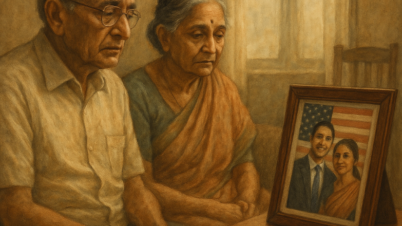
American Dream, India's Forgotten Parents
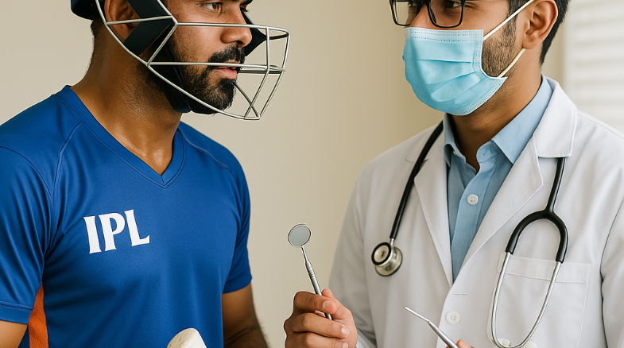
What Medicine & Dentistry Must Learn From the IPL Cricket Format
Illusion of Financial Freedom:
The Chasing of an Infinite Mirage
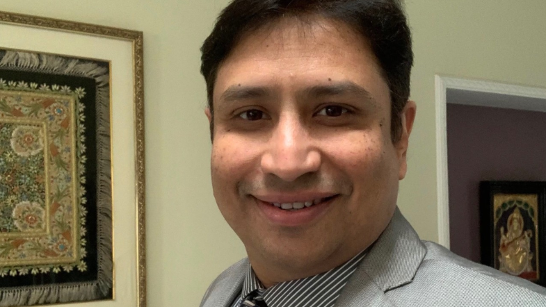
Why Everyone Should Be an Entrepreneur:
That's Completely Okay, Too
Silent Agony of Leadership:
The Burden No One Talks About
Bridging the Gap in Dental Education
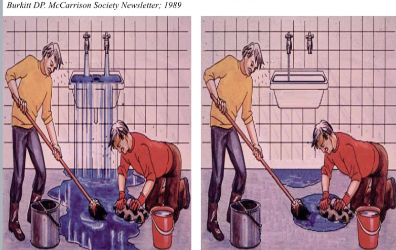
Bridging the Gap in Dental Education
"Don’t just mop the floor , turn off the tap" - Burkitt DP
COVID-19
A Clarion Call For A Robust Public-Private Disaster Management Program
ET Health world
01/01/2020
Pediatric dentistry can reveal signs or diseases at a very early stage: Dr Srivats Bharadwaj
There have been many types of research establishing the fact that oral health is directly linked to heart health, stroke, uncontrolled diabetes etc. All of these issues are related to oral health. Therefore, paediatric dentistry is the future of not just dentistry but health in general.
Times of India
14/04/2019
DOCTOR ON DEMAND House calls make a comeback
A section of doctors are now offering house call services for patients who cannot visit clinics due to age or illness, or those who would prefer home-based care. Doctors say this trend could grow as technology improves, making remote monitoring easier and more cost-effective.
Deccan Chronicle
09/05/2017
Bad breath for sure if you munch on snacks during night shifts
Bad breath could be a sign of dental problems. According to Dr. Srivats Bharadwaj, poor dental hygiene can also lead to bad breath.
The News Minute
13/08/2017
In this jungle, you can get your cavities filled: Bengaluru’s unique dental centre
At Dento Jungle, children get their teeth cleaned while watching animated movies and learning about oral hygiene.
The Hindu
22/02/2017
Children of tribal school in H.D. Kote get dental sealants
Over 300 children of tribal schools in H.D. Kote forest areas received dental sealants.
Times of India
22/03/2017
Dental hygiene in kids: Where are you going wrong?
Simple habits like brushing teeth regularly and cleaning the tongue after waking up and before going to bed can prevent many dental problems.
Franchise India
29/09/2017
Innovations in healthcare delivery, opportunities and challenges
Dentistry has undergone several innovations and will continue to do so. Innovations in healthcare delivery, opportunities, and challenges in the dental sector and the measures that can be adopted for quality care have been discussed
Times of India
22/03/2017
Dental hygiene in kids: Where are you going wrong?
Simple habits like brushing teeth regularly and cleaning the tongue after waking up and before going to bed can prevent many dental problems.
IBN Live
9/11/2017
Bengaluru-based clinic serves up smiles with fun dentist visit for children
Bengaluru-based Vatsalya Dental-Dento-Jungle is working on children’s teeth and making dental visits fun. Parents can make appointments for their children.
New Indian Express
04/05/2017
Midnight munchies killing your teeth?
Simple habits like brushing teeth regularly and cleaning the tongue after waking up and before going to bed can prevent many dental problems.
New Indian Express
07/08/2017
Techie band plays at clinic, to ease hours of wait
A Bangalore-based techie has added a musical twist to dental visits. Apart from being a dentist, he also leads a band that entertains patients at his clinic.
BW Disrupt
16/01/2017
Vatsalya Dental launches incubation centre for medical professionals
Vatsalya Dental, a dental clinic chain, has launched an incubation centre for medical professionals. The centre will provide space, equipment, and mentorship to help aspiring dentists start their own practice.
The New Indian Express
31/08/2017
Who said yellow teeth are stronger? They’re not
Your tooth colour is determined largely by the translucent, porcelain-like enamel and the underlying dentine. Enamel is generally white, while dentine is yellow. The dentine layer beneath the enamel is what gives teeth their characteristic yellow hue. In fact, yellower teeth can be stronger because they have more dentine.
BW Disrupt
06/07/2018
Bracing up for a new future
As the global economy gets to grips with the uncertainties of 2017, many healthcare segments are positioning themselves for the new normal.
BW Disrupt
28/10/2016
Diwali 2016: This one advice can aid your oral health
With Diwali round the corner, Dr. Shiba Desai, founder of Vatsalya Dental, has one piece of advice -Brush your teeth with fluoridated toothpaste twice a day, flossing once a day, and rinsing your mouth with an antiseptic mouthwash. This will help keep your teeth healthy and strong.
BW Disrupt
03/07/2016
For this doctor, prevention is better than cure
Dr. Srivats Bharadwaj, founder of Vatsalya Dental, believes in the power of preventive dentistry. "My aim is to prevent dental problems before they occur, rather than treating them after they have occurred," she says.
The New Indian Express
01/10/2016
Healthy teeth for a smiling heart
A healthy smile goes beyond just aesthetics — it reflects good oral hygiene and overall well-being.
Yourstory
02/12/2016
TNo more drilling, filling, and billing
Vatsalya's new model for oral care
New Indian Express
01/08/2016
Oral Health Without Tears
How to take care of your teeth and gums without pain or discomfort
BW Disrupt
16/01/2017
Technology building India’s “Global “ health care industry
Role ofDentistry in overall well-being
YourStory
01/05/2016
House of healthcare start-up
These 8 startups are out to change home healthcare in India
The Times of India
19/07/2016
Tooth ache leads to multi organ failure
A dental abscess can lead to multiple organ dysfunction. A 33 year old software engineer had to undergo surgery after his dental infection spread to multiple organs.
Pharma Biz
28/07/2016
Vatsalya Oral Health & ENR Foundation complete 41st dental camp for under-privileged kids with cardiac disorders
Under its CSR initiative, Vatsalya’s dental camps have so far benefited over 10,000 children. The foundation proposes to provide free dental care to 100,000 children in the next five years.
ET Indiatime
23/08/2016
Vatsalya introduces VELscope - oral cancer detecting device
VELscope is an adjunctive device to standard visual examination for detecting oral cancer. It is a non-invasive handheld device that uses natural fluorescence to screen for abnormalities in the oral cavity. The device is FDA-approved and has been used by dentists worldwide to detect oral cancer in its early stages.
Express Health Care
28/07/2016
Vatsalya – Centre for Oral Health with ENR Foundation conducts campaign on oral health
Vatsalya – Centre for Oral Health in collaboration with Germany – based ENR Foundation recently conducted a two-week campaign on oral health for under – privileged children with cardiac issues. As part of this programme that has been running for the last five years, the children went through free dental screening and treatment at Vatsalya – Centre for Oral Health.
Deccan Chronicle
11/07/2016
Ventilator-linked pneumonia deaths can be reduced: Experts
A Bengaluru-based dental clinic, Vatsalya Dental, is now advocating for mandatory annual dental check-ups for all children, regardless of their overall health. The clinic, which provides free dental treatment to underprivileged children with heart disorders in association with ENR Foundation, has conducted 39 camps so far, benefiting over 10,000 children. The foundation plans to provide free dental care to 100,000 children in the next five years. Additionally, the clinic has introduced VELscope, an FDA-approved non-invasive handheld device that uses natural fluorescence to screen for oral cancer, with early detection rates as high as 90%.
Article 1
.jpeg)
.jpeg)
.jpeg)
.jpeg)
.jpeg)
.jpeg)
.jpeg)
.jpeg)
.jpeg)
.jpeg)
.jpeg)
.jpeg)
.jpeg)
.jpeg)
.jpeg)
.jpeg)
Article 2

.jpeg)
.jpeg)
.jpeg)
.jpeg)
.jpeg)
.jpeg)
.jpeg)
.jpeg)
.jpeg)